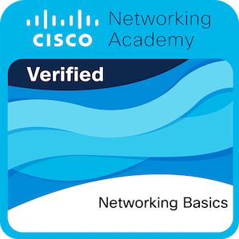

Cisco
Network Technician Career Path
Examen de la carrera de Técnico en Redes · nov. 2026
Resistencia, Chaco · Argentina
Soy Santiago Cuenca Cabrera, Técnico en Informática Profesional y Personal. Diagnostico problemas de PC y de conexión, explico las soluciones con claridad y tengo experiencia real atendiendo al público, en caja y en stock.
Formación técnica y experiencia con clientes.
Orientación técnica de 6 años de la E.E.T. N.º 24 “Simón de Iriondo”. Me formó para:
Librería LibreMax, Resistencia
Credenciales verificables y participación en campañas públicas de la NASA. «Ver» abre cada documento en esta página.
Examen de la carrera de Técnico en Redes · nov. 2026

Network Support and Security · nov. 2026

Network Addressing and Basic Troubleshooting · sep. 2026
Networking Devices and Initial Configuration · ago. 2026

Trayecto de 80 h en 6 meses, con los 4 módulos aprobados · nov. 2026
IA-First: fundamentos de IA · sep. 2026
Programación con IA, nivel inicial · sep. 2026
Programación con IA, nivel avanzado · oct. 2026
Desarrollo de proyectos reales · nov. 2026
Google Actívate · dic. 2024 · ID 340520569
Google Digital Academy · oct. 2024 · ID 325905091
Campaña pública de la NASA: píxel n.º 00507506 de las primeras imágenes del telescopio espacial Roman.
Campaña pública de la NASA: pase de abordar de la misión a Titán (lanzamiento previsto en jul. 2028).
Trabajos propios y en equipo, con su código o una demo.
Comercio · Web
Catálogo web de la librería donde trabajo: búsqueda, filtros por categoría y alta o edición de productos (~400 artículos). La versión pública oculta los precios.
Ver catálogo LibreMaxBackend · Proyecto final
Sitio del evento de la E.E.T. N.º 24 con panel de gestión, reservas y tests automatizados. Entrega final de Generación T.
RepositorioIoT · Trabajo en equipo
Conteo de ganado con lectores RFID y una Raspberry Pi que envían los datos a una base en la nube, consultada desde una app móvil.
RepositorioEscribime por email o por LinkedIn.